斗子会以印象中两人关系/最新得到的两人关系来扮演自己的角色，但往往出错也是因为他对人际关系的误判，无论是剧场版还是漫画版中都有佐证。
而最新一话的读者就有点像园子，理论上清楚新兰的正确相处方式，但却又被甜言蜜语和脸红蒙蔽认为只是新一开窍终于学会小情侣谈恋爱了。
而最新一话的读者就有点像园子，理论上清楚新兰的正确相处方式，但却又被甜言蜜语和脸红蒙蔽认为只是新一开窍终于学会小情侣谈恋爱了。
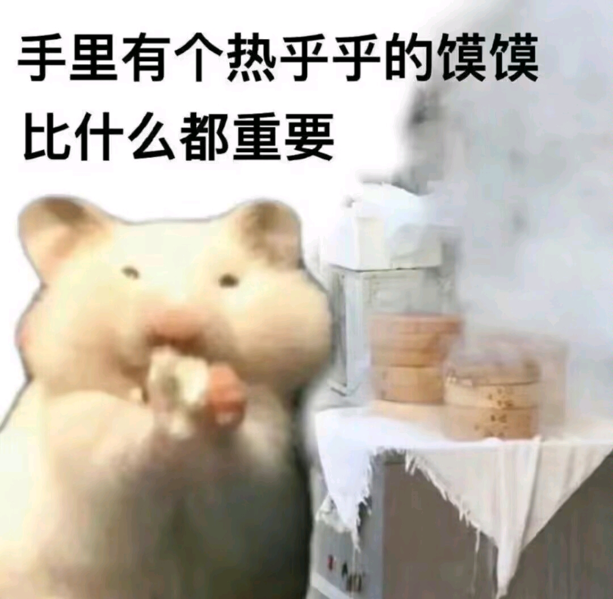
最新一话新一斗子风格分界线其实非常明显，但是青山非常鸡贼用“脸红”来当烟雾弹。
新兰戏一直都是这种，明明乍一看都觉得很古怪的剧情，但看到新一和小兰都脸红了，那他俩一定是十分真挚坦诚自己的心意！
新兰戏一直都是这种，明明乍一看都觉得很古怪的剧情，但看到新一和小兰都脸红了，那他俩一定是十分真挚坦诚自己的心意！
先提一下个人观点，看到不少人认为小兰找新一对峙是因为园子拱火，但实际上园子在这的效果依旧是说出小兰明明很在意但碍于人设却不能说的话。
所以这一格小兰明明是笑眼却配了一个完全不搭的蹙眉。
后面的对峙话语也证明了这点，小兰因为可以和柯南相处知道得比园子还多，所以她格外清楚新一何止是不联系她，是宁愿和新一那个小学生弟弟联系都不和她联系，膈应加倍。
园子只是小兰行动合理化的嘴替，不是背锅侠
所以这一格小兰明明是笑眼却配了一个完全不搭的蹙眉。
后面的对峙话语也证明了这点，小兰因为可以和柯南相处知道得比园子还多，所以她格外清楚新一何止是不联系她，是宁愿和新一那个小学生弟弟联系都不和她联系，膈应加倍。
园子只是小兰行动合理化的嘴替，不是背锅侠
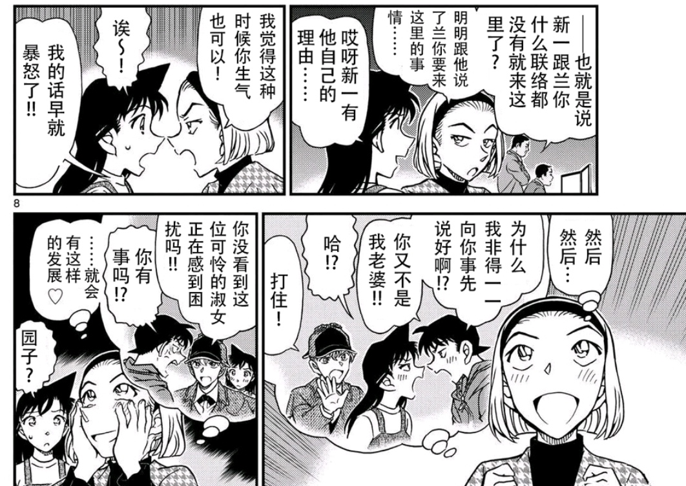
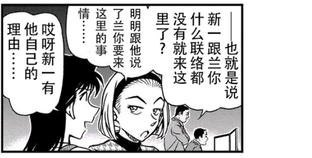
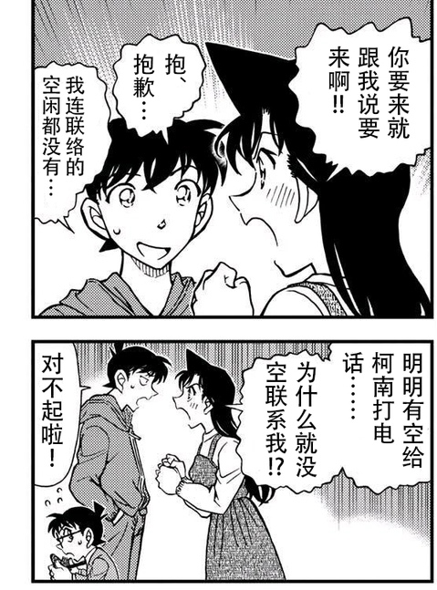
接着就是以园子对新一小兰两人了解推导脑补的剧情。
青山在这里合理利用了园子“花痴”的人设，把重点剧情当成狗血八点档让读者笑一笑转身忘记。
实际上园子脑补的新兰针尖对麦芒对峙剧情后面确实发生了，但没有像她以为的两人都在脸红对峙，而是小兰一个人在脸红，斗子扮演的新一则是一脸不耐。
这也符合我之前在隔壁帖子提到的园子对新兰感情进度认知错误的观点，不过园子对两人性格了解，刨去感情进度错误认知外，她对两人会对峙这事很笃定。
园子脑补中新一说的话其实更符合青梅竹马小情侣打情骂俏的风格，因为重点是在小兰的身份定位：“又不是我老婆”，像是新一在倒逼小兰承认她和自己的亲密关系，只要承认他就会说。
而且有趣的是接下来的现实对峙里，小兰就说出了自己之于新一的身份定位：“我们不是正在交往吗？”
如果园子的脑补是真的那就好了。
“我为什么要说？你又不是我老婆！”
“哈？我们不是正在交往吗！”
然后两人反应过来对视脸红，这就是青梅竹马交往后迟钝意识到两性关系变化的磕点。
然而没有。
小兰做出了园子认为青梅竹马小情侣会做的事，新一没有。
青山在这里合理利用了园子“花痴”的人设，把重点剧情当成狗血八点档让读者笑一笑转身忘记。
实际上园子脑补的新兰针尖对麦芒对峙剧情后面确实发生了，但没有像她以为的两人都在脸红对峙，而是小兰一个人在脸红，斗子扮演的新一则是一脸不耐。
这也符合我之前在隔壁帖子提到的园子对新兰感情进度认知错误的观点，不过园子对两人性格了解，刨去感情进度错误认知外，她对两人会对峙这事很笃定。
园子脑补中新一说的话其实更符合青梅竹马小情侣打情骂俏的风格，因为重点是在小兰的身份定位：“又不是我老婆”，像是新一在倒逼小兰承认她和自己的亲密关系，只要承认他就会说。
而且有趣的是接下来的现实对峙里，小兰就说出了自己之于新一的身份定位：“我们不是正在交往吗？”
如果园子的脑补是真的那就好了。
“我为什么要说？你又不是我老婆！”
“哈？我们不是正在交往吗！”
然后两人反应过来对视脸红，这就是青梅竹马交往后迟钝意识到两性关系变化的磕点。
然而没有。
小兰做出了园子认为青梅竹马小情侣会做的事，新一没有。
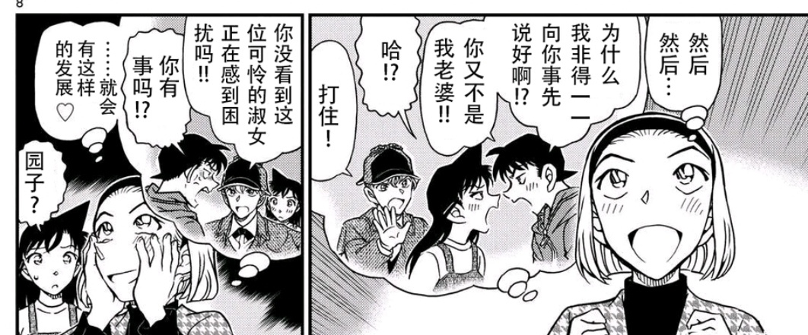
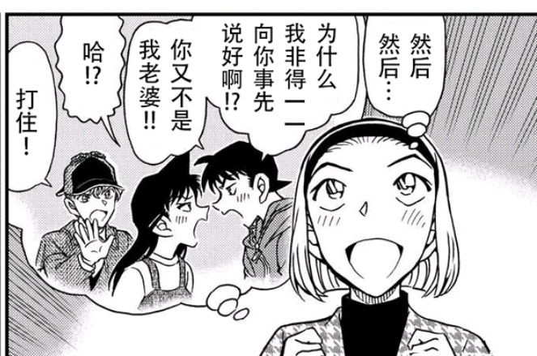
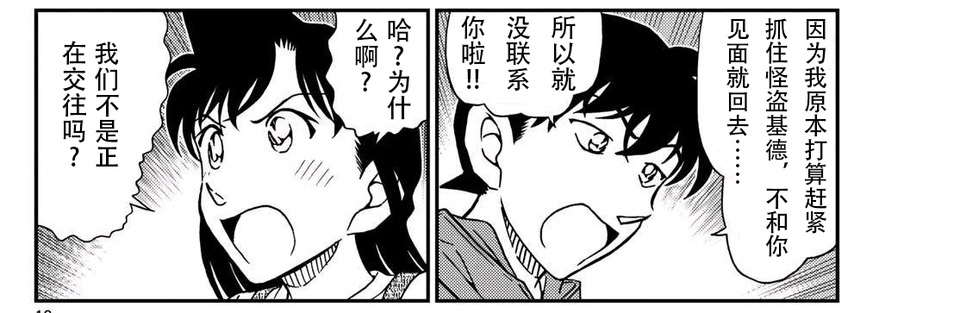
写的很好，蹲
另外这样的帖发柯南吧是不是有点浪费（小声）
另外这样的帖发柯南吧是不是有点浪费（小声）
2023-11-12 08:46 | 两百斤月半宅:因为以新兰分析为主所以不适合发文吧诶2023-11-12 08:51 | 贴吧用户_0Q8721R:如果那边ok的话也可以发。
回复 两百斤月半宅 :整理一下应该是可以的，不过相对而言可能会比较凉（小声）
的确，园子yy的还能算得上是样板戏糖，现实73画的是基德傀儡戏，连样板戏都算不上，要不是为了埋雷，那就是对燃冬三人组都不友好的纯烂活…又来了，73的圣贼二象性……
2023-11-12 07:09 | 利姆露派蒙💦:燃冬三人组2023-11-12 08:48 | 两百斤月半宅:现在都这么形容了吗
对，青山很喜欢在这种细节处搞这种暗示，他清楚怎么画，但就是不画。哪怕是样板戏但只要没按园子想象的让白马探英雄救美那也算得上无雷的竹马糖，但偏偏就是按膈应的方式画。
好帖注意备份
2023-11-12 08:48 | 两百斤月半宅:主吧那边吗？我现在写完去那边发一份。
想了想，再强调一下园子认知和现实区别。
园子认知中新兰关系应该是小兰被动新一主动。
因此她脑补中新一说的话是在暗暗逼迫小兰承认他俩的关系，而“不开窍”的小兰get不到，就会生气反问“哈？！”，一副真要和他吵起来的样子。
但现实中是新一不开窍，甚至直白说出自己的目的就是抓怪盗基德，压根没想见小兰，所以也就不联系了。
而小兰虽然也说了反问的“哈”，但却没有园子脑补中那么激动，甚至条理清晰摆出他俩现在的关系今非昔比：“我们不是正在交往吗？”。
现实中究竟谁主动谁被动，谁安全感不足逼迫不开窍的另一方承认关系，一目了然。
园子认知中新兰关系应该是小兰被动新一主动。
因此她脑补中新一说的话是在暗暗逼迫小兰承认他俩的关系，而“不开窍”的小兰get不到，就会生气反问“哈？！”，一副真要和他吵起来的样子。
但现实中是新一不开窍，甚至直白说出自己的目的就是抓怪盗基德，压根没想见小兰，所以也就不联系了。
而小兰虽然也说了反问的“哈”，但却没有园子脑补中那么激动，甚至条理清晰摆出他俩现在的关系今非昔比：“我们不是正在交往吗？”。
现实中究竟谁主动谁被动，谁安全感不足逼迫不开窍的另一方承认关系，一目了然。
现在聊一下帖子的主题，斗子的演技。
这段新兰剧情变化的分界线其实就是小兰说出“正在交往”。
到此为止园子没有任何觉得新一ooc或者小兰/新一有长进的部分，这也代表就算脑补和现实有区别，但新一小兰这种针尖对麦芒的吵架模式是符合园子对新兰两人认知的。
也就是前面那些新一的直男发言都在园子意料之内，所以她会激动握拳在内心鼓励让小兰上，而不是生气新一这家伙怎么对她的好闺蜜说出这么过分的话。
这段新兰剧情变化的分界线其实就是小兰说出“正在交往”。
到此为止园子没有任何觉得新一ooc或者小兰/新一有长进的部分，这也代表就算脑补和现实有区别，但新一小兰这种针尖对麦芒的吵架模式是符合园子对新兰两人认知的。
也就是前面那些新一的直男发言都在园子意料之内，所以她会激动握拳在内心鼓励让小兰上，而不是生气新一这家伙怎么对她的好闺蜜说出这么过分的话。
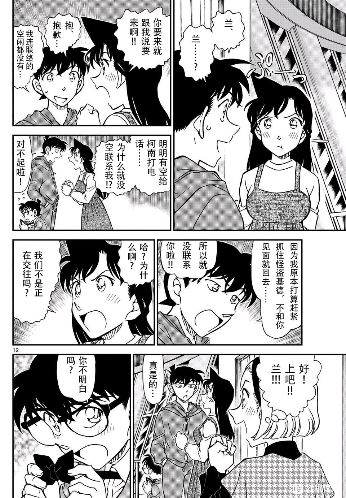
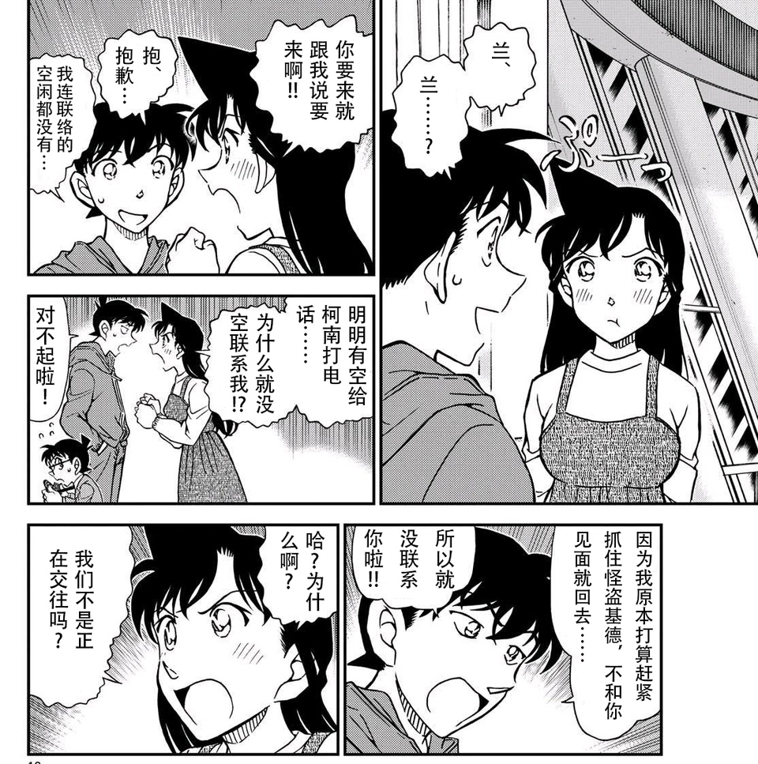
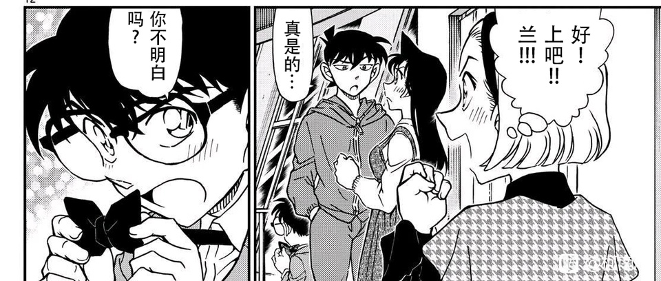
在小兰说出交往中后，不管是柯南和斗子都想起关系变化，于是立马开启直球模式，也是“新兰”糖点。
脸红+甜言蜜语输出后斗子柯南转身就走，兰园留在原地脸红看着他俩的背影。
但这里很微妙的就是兰园脸红下一格就是斗子一脸平静回忆和柯南合作的条件，明示刚刚的脸红只是你斗哥我的演技罢了。
那柯南呢？没有丝毫和小兰见面的回味和脸红余韵，甚至斗子都在对自己的演技沾沾自喜有点小脸红，柯南却只是平静半月眼和斗子对呛。
对他而言仿佛只是完成提交了任务，所以不需要再去思考任务内容本身了。
柯南现在已经不会为欺骗小兰感到内疚自责痛苦了，因为一千多话下来他已经明白这才是最好的选择。
脸红+甜言蜜语输出后斗子柯南转身就走，兰园留在原地脸红看着他俩的背影。
但这里很微妙的就是兰园脸红下一格就是斗子一脸平静回忆和柯南合作的条件，明示刚刚的脸红只是你斗哥我的演技罢了。
那柯南呢？没有丝毫和小兰见面的回味和脸红余韵，甚至斗子都在对自己的演技沾沾自喜有点小脸红，柯南却只是平静半月眼和斗子对呛。
对他而言仿佛只是完成提交了任务，所以不需要再去思考任务内容本身了。
柯南现在已经不会为欺骗小兰感到内疚自责痛苦了，因为一千多话下来他已经明白这才是最好的选择。
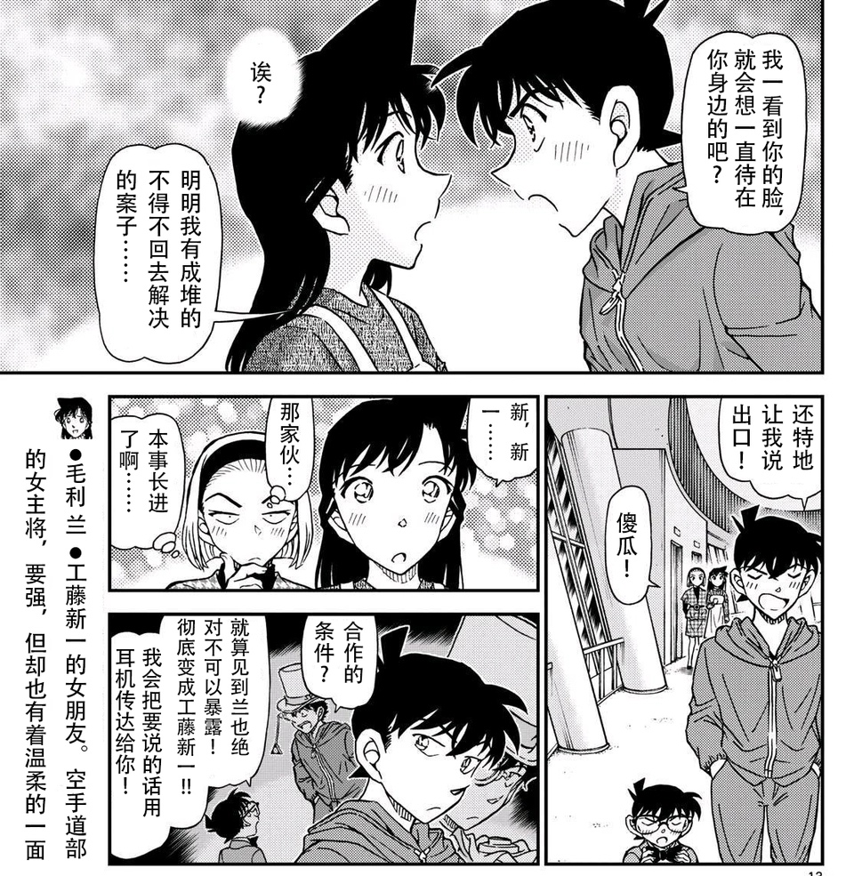
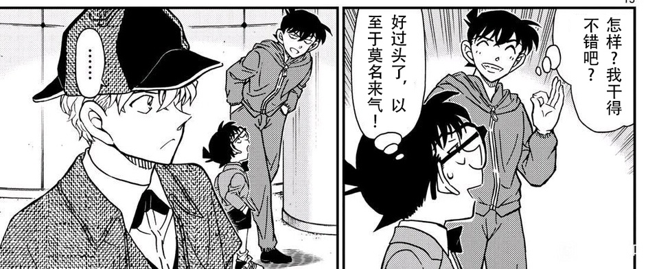
关于“情话”部分其实不止园子觉得奇怪，直面情话本身的小兰内心戏也是“诶？”。
是的，不管是小兰还是园子，都在认为新一说的话超出她俩的认知。
园子作为小兰嘴替再次用内心戏直白解释为什么小兰面对甜言蜜语内心戏却是“诶？”，因为“本事长进了啊……”。
什么本事？新兰对峙没有任何肢体接触和别的发展，那指的当然是说话本事。
是的，不管是小兰还是园子，都在认为新一说的话超出她俩的认知。
园子作为小兰嘴替再次用内心戏直白解释为什么小兰面对甜言蜜语内心戏却是“诶？”，因为“本事长进了啊……”。
什么本事？新兰对峙没有任何肢体接触和别的发展，那指的当然是说话本事。
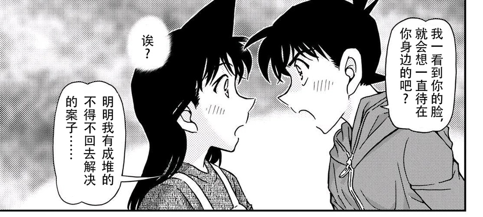
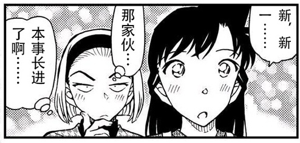
前者是兰园都觉得没有问题的新一。
后者是兰园都觉得有所长进的新一。
所以我会说斗子的演技很好认，他会根据关系判定迅速变换他认为所扮演身份的演技，一旦有原主作为参照，他的迅速变脸就格外好认。
所以青山会用“脸红”来做烟雾弹。
后者是兰园都觉得有所长进的新一。
所以我会说斗子的演技很好认，他会根据关系判定迅速变换他认为所扮演身份的演技，一旦有原主作为参照，他的迅速变脸就格外好认。
所以青山会用“脸红”来做烟雾弹。
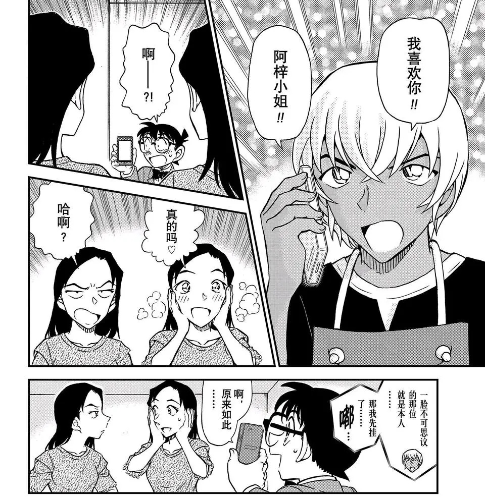
2023-11-12 08:51 | khjby:这个阿梓怎么一副秀吉那个女朋友的表情2023-11-12 09:16 | 两百斤月半宅:回复 khjby :青山叛逆，想推透梓，但是樱花妹只接受梓当梦女皮套，不接受真推，炎上冲了一波青山。他记仇，就搞这种透主动梓拒绝的剧情，2023-11-12 12:18 | 贴吧用户_JQeDt32:回复 两百斤月半宅 :我当时看到这段也觉得明显是老贼阴阳，前面不是还有小梓说如果我和安室透在一起的话又会被说吧这种的阴阳怪气

再补一张正常人和被pua习惯的人面对小兰诘问的态度。
青山完全可以让斗子和柯南同步表情，但却画了明显不同的两个表情。
两位男角色都是有青梅竹马的，但明显两位的青梅给他们的感受和距离完全不同呢 希望以后不要再看到拿小兰踩青子的发言了。
希望以后不要再看到拿小兰踩青子的发言了。
也别说啥这会他俩交往了小兰才那么急，没交往前新一每次上大号小兰都是同款责问。
青山完全可以让斗子和柯南同步表情，但却画了明显不同的两个表情。
两位男角色都是有青梅竹马的，但明显两位的青梅给他们的感受和距离完全不同呢
希望以后不要再看到拿小兰踩青子的发言了。也别说啥这会他俩交往了小兰才那么急，没交往前新一每次上大号小兰都是同款责问。
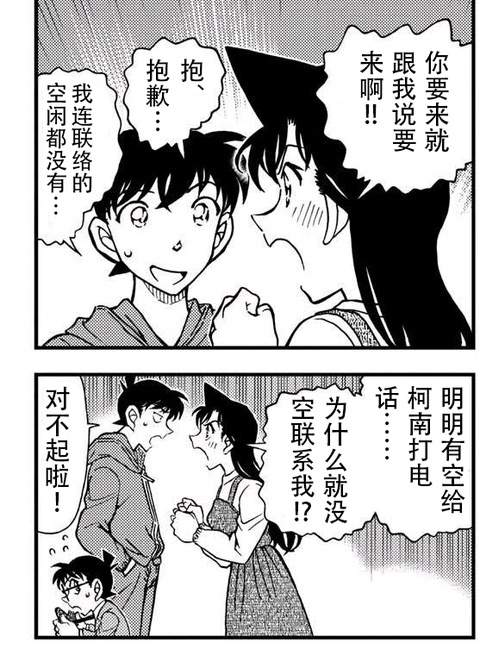
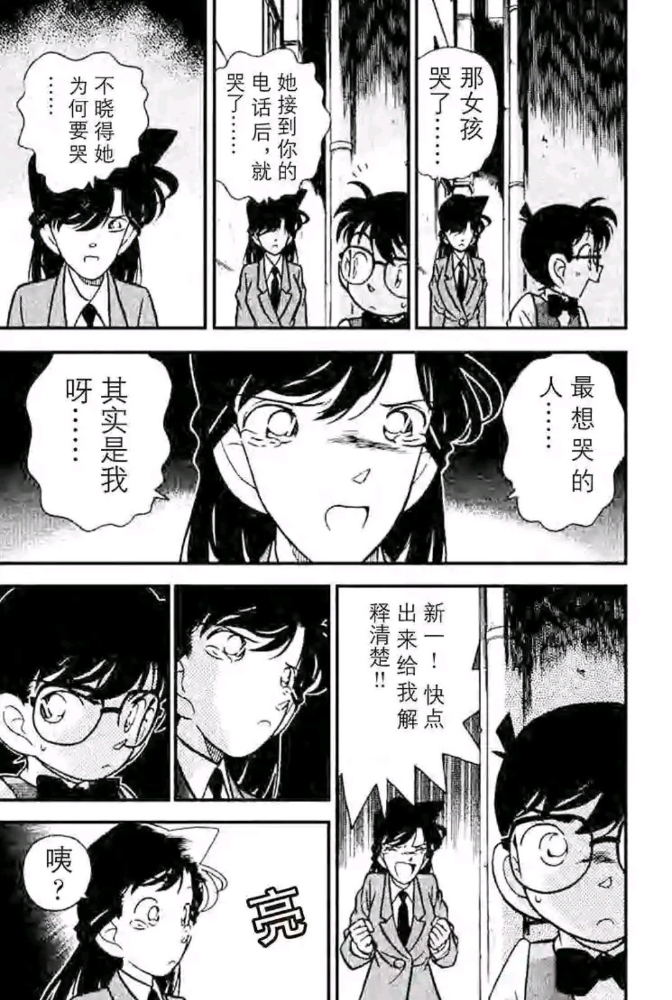
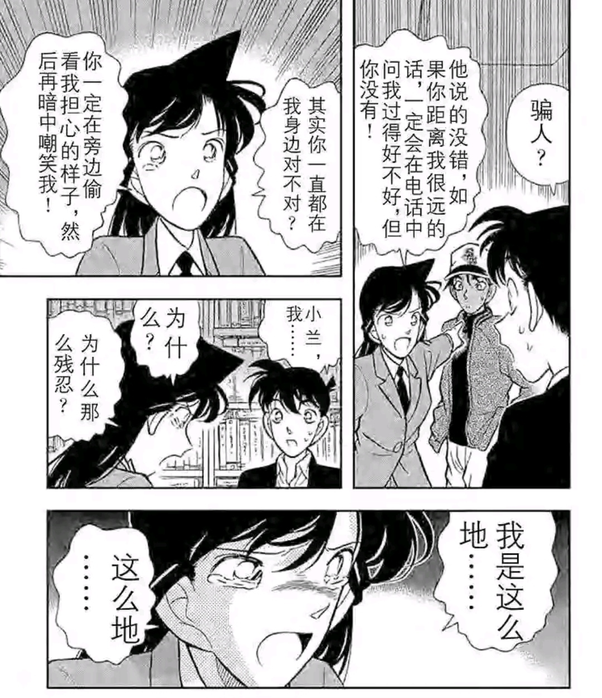
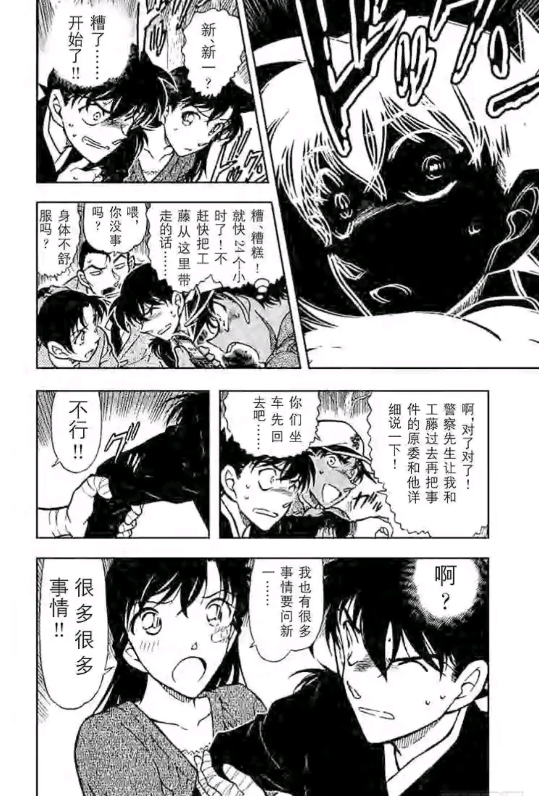
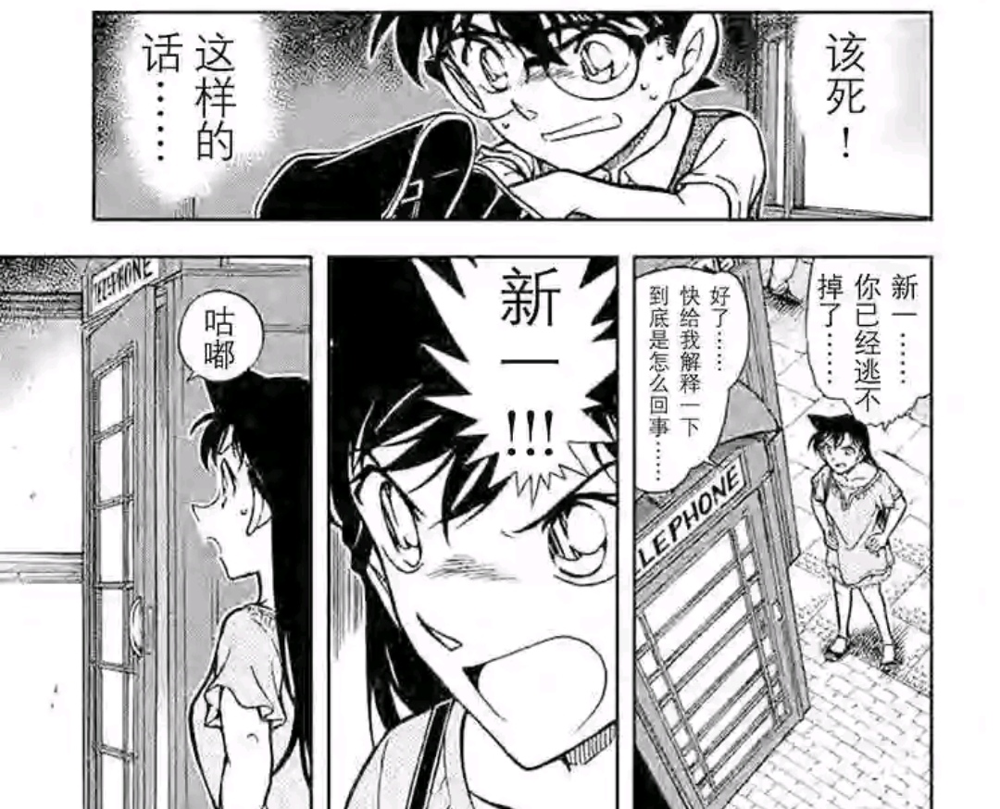
😊
形式是欺骗的，人物是替身的，交往后该做的事情是一件没有的，所以实在很难把这些话当成情话磕诶，这次case在我看来唯一还算甜点的可能只有柯子在白马面前那句“哈”了